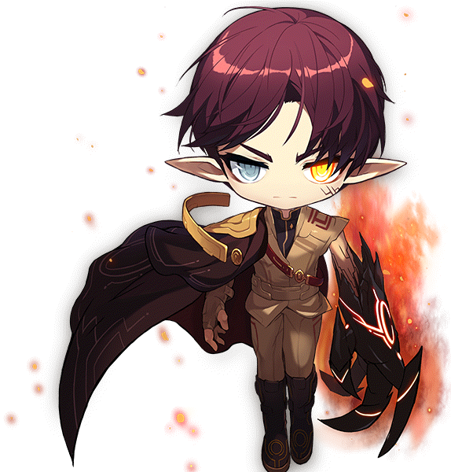

위젯 스튜디오에서 제작, 넥슨이 유통하는 온라인 게임으로 장르는 MMORPG로
SD 생김새의 캐릭터가 모험을 떠나면서 성장하는 게임으로
3D 게임에 익숙하지 않은 일반인도 쉽게 플레이 할 수 있도록 2D게임입니다.
2003년 4월 29일부터 상용 서비스가 시작했으며 2020년 현재 17주년을 맞았습니다. 다채로운 필드에서의 여행과 모험을 강조하고 있습니다.
해당 게임은 게임뿐만이 아니라 가이드북, 백과사전 등 출판물등을 모두 합치면 1200만 부 정도의 양을 출하했고 그 중 고가에도 불구하고 1800만 부가 넘게 팔리는 기염을 토했다.
메이플스토리공식유튜브

메이플스토리 직업군
메이플스토리는 국내 서비스와 해외, 이벤트 전용 직업으로 나뉘어져있습니다.
국내 서비스 직업으로는 전사, 마법사, 궁수, 도적, 해적계열로 총 5개로 크게 나눠져 있으며 그 안에서도 모험가, 시그너스 기사단,영웅 등 9개의 종족으로 나뉘어 총 47개의 직업이 있습니다.
이벤트/해외전용 직업으로는 국내와 똑같이 5계열로 나뉘며 그 중 다른 점은 몬스터가 직업에 있다는 것 입니다..
해외 전용 직업으로 총 6개의 직업으로 나뉘어져 있습니다.
메이플 최초 몬서터 직업, 핑크빈
현재 육성 중인 직업 및 시작 계기
초등학교 시절에 자주 하던 메이플스토리였는데 시간이 지나면서 게임을 하지 않고 있다가
친구의 권유 예전과 많이 달라진 시스템으로 바뀌었다고 알려주며 2년쯤부터 다시 시작을 하였으며
그때 마침 '트위치'라는 인터넷 방송을 자주 봤었는데 제가 팔로워중이던 스트리머가 메이플을 시작하였고
그때 처음 육성한 직업으로는 레프 종족의 아크입니다.
해당 방송을 보면서 사냥 속도나 보스 전에서의 기동성과 유틸리티가 좋아서 직접 해당 직업군을 키워보기 시작하였습니다.
